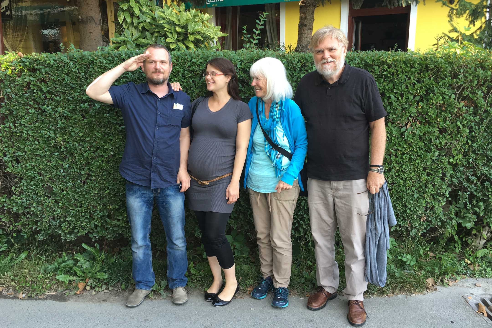
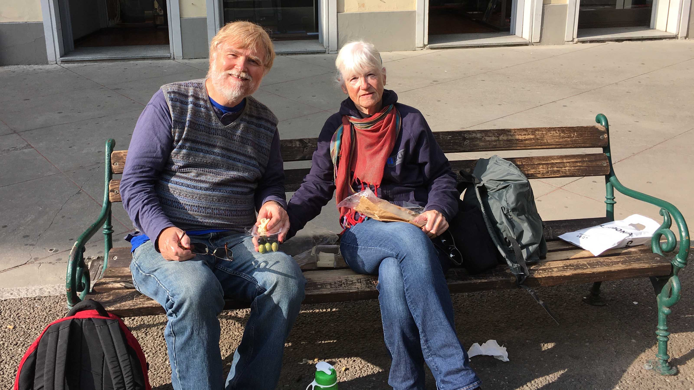

Welcome to Bill's Blog!
I retired in 2002. During the next two years I travel on my own exploring the world. At that time I was not publishing this blog, but I did write stories home. Those eMails to my family can be in the links on the left. The first journey to South America had an additional twist, because I made the journey in my very small 4-seater airplane.
This blog began in 2004. The link on the left will take you to an excellent Table of Contents with links to all the blog entries.
Betty and I travel extensively between 2004 and 2016. This blog has chronicled those journeys. Since 2016, we have not traveled much, thus no stories to tell. Should we find our way to an interesting location. You will find that story here.
Enjoy the Stories and Photos of our Travels!
Dom, Ana, Betty and Bill - September 2016, Zagreb, Croatia

Eating a Lunch of Cheese, Olives and Bread - November 2016, Modena, Italy
